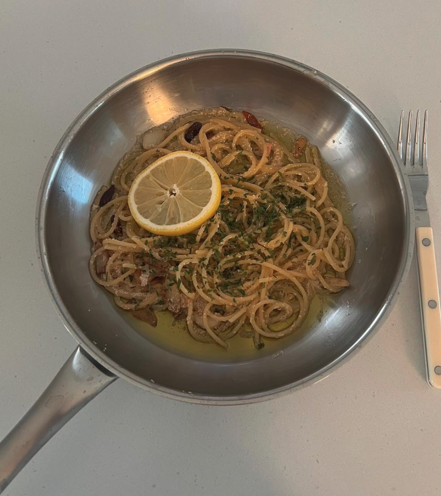

윤그린's roe lemon pasta
- 스파게티 건면 70g
- 백명란
- 레몬
- 통마늘
- 페페론치노
- 보급형 올리브오일
- 피니쉬 올리브오일
- 이탈리안 파슬리
- 그라나파다노
- 소금
- 후추
- 1. 팬에 올리브유를 넉넉히 두르고 편마늘과 페퍼론치노를 넣고 볶는다.
- 2. 칼등으로 명란알만 분리한다.
- 3. 스파게티면은 소금 한스푼 넣은 물에 6-7분 삶는다.
- 4. 삶은 파스타면과 면수 조금을 팬에 넣어주고 명란을 넣어 같이 볶아준다.
- 5. 뭉친채로 익지 않게 풀어서 섞어준다.
- 6. 불을 끄고 피니쉬 오일을 한바퀴 둘러준다.
- 7. 파슬리와 후추를 넣어준다.
- 8. 면수가 줄어들면 그릇에 붓고 그라나파다노 치즈를 뿌려준다.
- 9. 생레몬을 짜준다.